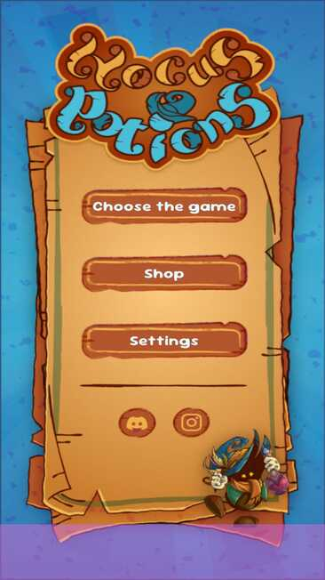

.pptx.png)
Hocus Potion
A collection of casual mini-games about an apprentice sorcerer learning to brew potions.
The brief was to build, in one month, an Android game in Unity: a collection of thematically linked games, with at least two casual ones. We chose an apprentice sorcerer learning to make potions. The two mini-games are connected: in the first, you find the ingredients that you use to brew potions in the second.
I was the producer . I ran the team’s meetings and communication and made sure development problems got solved. [Tools: Discord, task board, build pipeline.]
I attended every meeting and posted a written recap on the team’s Discord as a reminder. During the week I collected feedback and problems as they came up and noted them down, and those notes became the next meeting’s agenda. The team praised this routine.
Mini-game 1: microphone input. Using the phone’s microphone as a controller was hard, especially on the dated hardware used for evaluation. The two hard problems were balancing the strength of the blow and tuning sensitivity against ambient noise. [How you solved it: thresholds, calibration, a fallback.]
Mini-game 2: depth perception. The lighting was flat, so players struggled to read 3D distances. [What fixed it: shadows, lighting, camera angle, visual cues.]
Production: learning the role. It was my first time as a producer, and the main challenge was working out what the role actually was, making communication clearer and resolving development issues. I was sometimes hesitant and not assertive enough, because I didn’t want to make mistakes. I was advised to stop calling the whole team for every problem and to bring in only the people involved, so they could settle it directly and precisely.
[What you delivered, how it was evaluated, one thing you would do differently as producer.]
